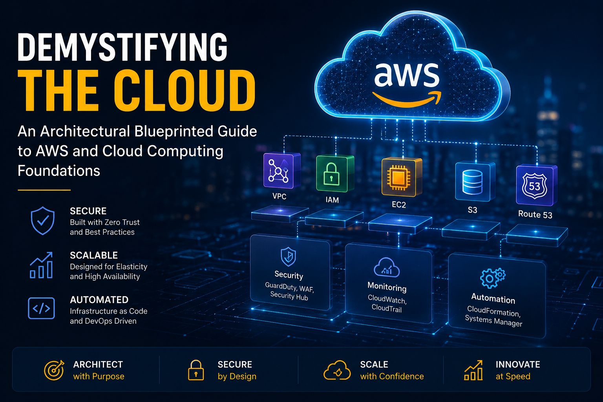

Beyond the Hype: Building AI-Powered Solutions for Modern Businesses
By Badri Tamang | Published: May 2026
Fifteen years ago, kicking off a new IT project meant navigating a physical maze of hardware procurement. You had to calculate server rack dimensions, order physical CPU arrays, configure hardware RAID controllers, and wait weeks for components to arrive at your data center.
Today, that entire hardware layer has been abstracted into software. In 2026, the barrier to entry has completely vanished. With a few API calls, a couple of clicks in a web console, or a single line of code via Infrastructure as Code (IaC), organizations can instantly deploy globally distributed infrastructure capable of serving millions of users.
However, many newcomers still approach cloud computing with an outdated mindset. They treat the cloud as simply “someone else’s computer” and migrate workloads without redesigning their operational practices. The result is often uncontrolled spending, fragmented configurations, and severe security exposure.
Cloud computing is not merely infrastructure outsourcing — it is an architectural discipline that demands automation, visibility, and security-first engineering.
Understanding modern cloud ecosystems requires mastering the service models, deployment strategies, and security frameworks that power platforms such as AWS.
1. The Core Service Models: Understanding the Division of Labor
Every cloud resource falls into one of three primary service models. These models determine exactly how much control you retain and how much operational responsibility the provider assumes.
+-----------------------------------------------------------------------+ | SaaS (Software as a Service) | App, Data, OS, Hardware by Vendor | +-----------------------------------------------------------------------+ | PaaS (Platform as a Service) | App & Data by You; OS & Infra by Vendor | +-----------------------------------------------------------------------+ | IaaS (Infrastructure as a Service) | You manage OS up; Vendor manages Hardware | +-----------------------------------------------------------------------+
A. Infrastructure as a Service (IaaS)
IaaS provides virtualized compute, storage, and networking resources while leaving operating system management and software configuration entirely in your hands.
Services such as Amazon EC2, Google Compute Engine, and Azure Virtual Machines give engineers complete flexibility to configure operating systems, firewalls, storage volumes, and runtime environments.
B. Platform as a Service (PaaS)
PaaS removes the burden of infrastructure and operating system management. Developers simply deploy their applications while the provider handles scaling, runtime management, and patching automatically.
Common examples include AWS Elastic Beanstalk, AWS Lambda, Heroku, and Google App Engine.
C. Software as a Service (SaaS)
SaaS delivers complete applications directly through browsers or APIs. Users consume the software without managing infrastructure, operating systems, or application maintenance.
Examples include Microsoft 365, Salesforce, Meta Ads Manager, and AWS IAM Identity Center.
2. Navigating the Shared Responsibility Model
One of the most dangerous misconceptions in cloud computing is assuming that workloads hosted in a cloud environment are automatically secure.
Cloud security operates under the Shared Responsibility Model. The provider secures the infrastructure of the cloud, while customers remain responsible for securing everything deployed inside the cloud.
AWS RESPONSIBILITY: Security OF the Cloud [Physical Centers] ---> [Hypervisors] ---> [Core Infrastructure] ---------------------------------------------------------------- YOUR RESPONSIBILITY: Security IN the Cloud [OS Patching] ---> [IAM & Firewalls] ---> [Data Encryption]
If administrators fail to patch systems, expose administrative ports publicly, or leak credentials, the cloud provider will not prevent those compromises.
Identity Is the New Firewall
In modern cloud environments, Identity and Access Management (IAM) becomes the primary security boundary. Organizations must implement Zero Trust principles, Multi-Factor Authentication (MFA), and strict least-privilege access policies across every administrative account.
Eliminate Static Credentials
Hardcoded API keys and long-term credentials represent a major security risk. Modern architectures should leverage temporary credentials and metadata services such as AWS IMDSv2 to minimize credential exposure.
Continuously Monitor Infrastructure
Human error remains one of the leading causes of cloud breaches. Misconfigured storage buckets, unrestricted security groups, and accidental public exposure can rapidly compromise sensitive assets.
Continuous posture monitoring and automated configuration scanning are essential components of secure cloud operations.
3. Hardening Cloud Infrastructure with AWS Security Services
AWS provides a deeply integrated ecosystem of native security services designed to automate detection, governance, compliance, and threat prevention across enterprise cloud environments.
A. Identity Management & Governance
AWS Organizations enables enterprises to separate workloads into isolated accounts such as Development, Production, and Security environments. Service Control Policies (SCPs) enforce organization-wide restrictions regardless of local administrator permissions.
AWS IAM Access Analyzer continuously detects unintended external exposure of IAM roles, S3 buckets, and KMS keys.
B. Data Protection & Encryption
AWS Key Management Service (KMS) allows organizations to manage customer-controlled encryption keys and enforce encryption across EBS volumes, databases, and object storage.
Amazon Macie automatically scans Amazon S3 environments for sensitive information such as personally identifiable information (PII), credentials, and regulated data.
C. Continuous Threat Detection
AWS CloudTrail provides immutable audit logging for every API action performed across an AWS account. These logs become critical during forensic investigations and incident response.
Amazon GuardDuty continuously analyzes CloudTrail events, DNS activity, and VPC Flow Logs to identify malicious behavior such as crypto-mining, credential abuse, or data exfiltration attempts.
Amazon Inspector automatically scans EC2 instances, container images, and Lambda functions for software vulnerabilities and unintended network exposure.
D. Network & Perimeter Security
AWS WAF protects internet-facing applications against common web attacks including SQL injection and Cross-Site Scripting (XSS), while AWS Shield provides managed DDoS protection.
VPC Flow Logs provide network visibility by recording traffic traversing cloud network interfaces, enabling analysts to investigate lateral movement and suspicious communication patterns.
E. Compliance & Security Posture Management
AWS Config continuously evaluates cloud resources against predefined compliance rules and security baselines.
AWS Security Hub centralizes findings from GuardDuty, Inspector, Macie, and Config into a unified dashboard while continuously measuring environments against industry benchmarks such as CIS AWS Foundations.
4. Building Sustainable Cloud Operations
Successful cloud adoption requires operational maturity built on automation and DevSecOps principles.
Treat Infrastructure as Code as Law
Production environments should never rely on manual console configuration. Infrastructure must be deployed using version-controlled declarative tools such as Terraform or OpenTofu to ensure repeatability, auditability, and disaster recovery readiness.
Replace Bastion Hosts with AWS Systems Manager
Publicly exposed SSH and RDP ports dramatically increase attack surfaces. AWS Systems Manager Session Manager allows administrators to securely access instances without opening inbound administrative ports to the internet.
Design for Elasticity and Cost Control
Cloud scalability can become financially dangerous without governance. Organizations should implement resource tagging strategies, AWS Budgets alerts, and automated auto-scaling to align infrastructure usage with real-world demand.
The Path Forward: Scale with Purpose
Cloud computing has become the foundation of modern digital transformation, enabling organizations to deploy enterprise-grade systems at unprecedented speed and scale.
However, operational success requires understanding that cloud platforms are not shortcuts — they are engineering ecosystems demanding visibility, automation, governance, and security discipline.
By mastering cloud service models, respecting the Shared Responsibility Model, and integrating native AWS security services into every layer of infrastructure, organizations can build resilient, scalable, and secure cloud platforms engineered for long-term success.
Build with intention, automate relentlessly, and never allow infrastructure to scale faster than visibility.


3 Comments
Daniel Brooks
Excellent breakdown of the Shared Responsibility Model. Many organizations still misunderstand where AWS responsibility ends and customer responsibility begins.
Priya Sharma
The section on replacing bastion hosts with AWS Systems Manager Session Manager is especially valuable. Exposed SSH ports remain one of the most overlooked cloud risks.
Michael Tan
Strong emphasis on Infrastructure as Code and cloud governance. This reflects the real-world operational mindset required for secure and scalable AWS environments.